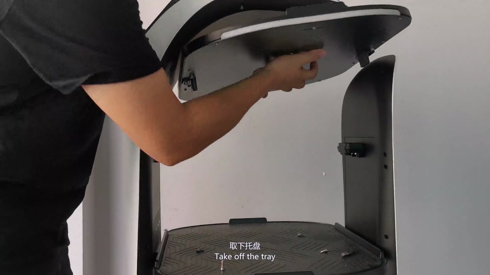
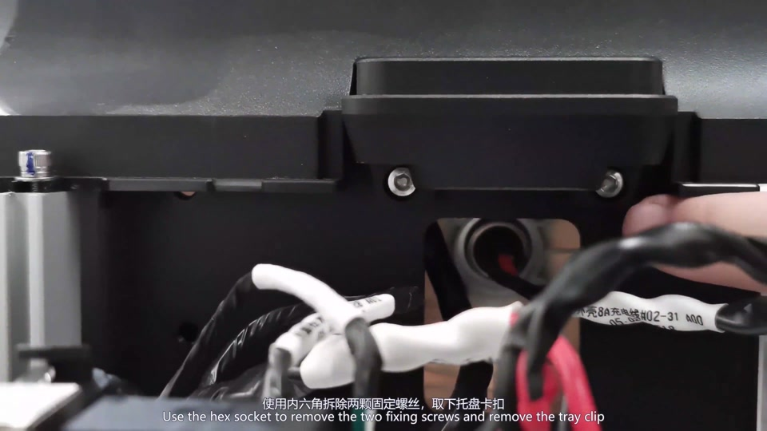
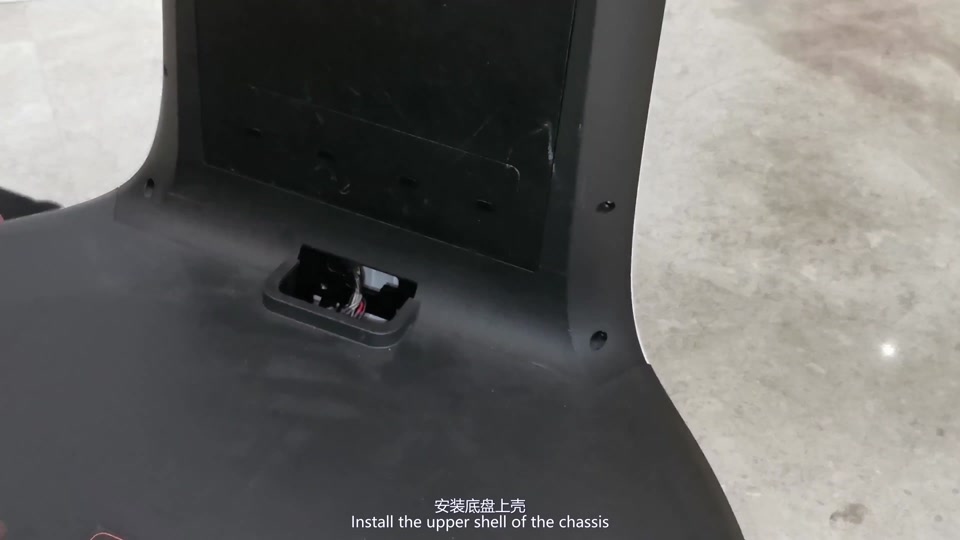
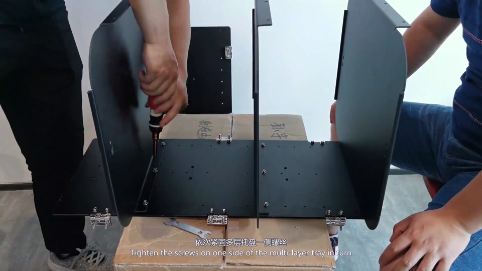
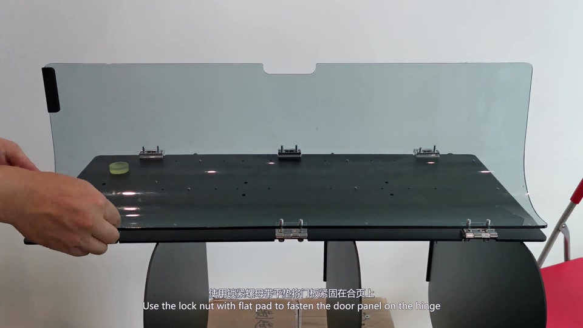
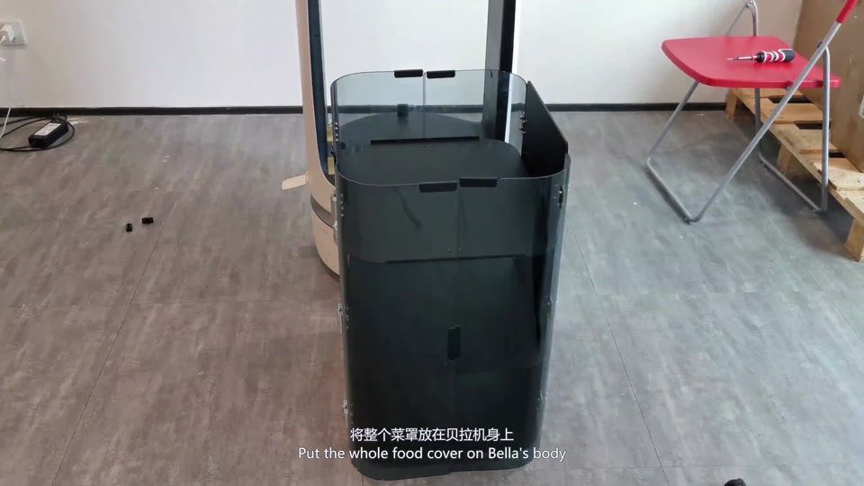
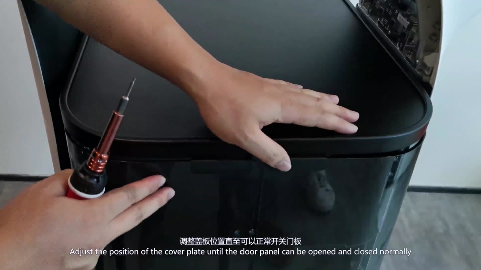
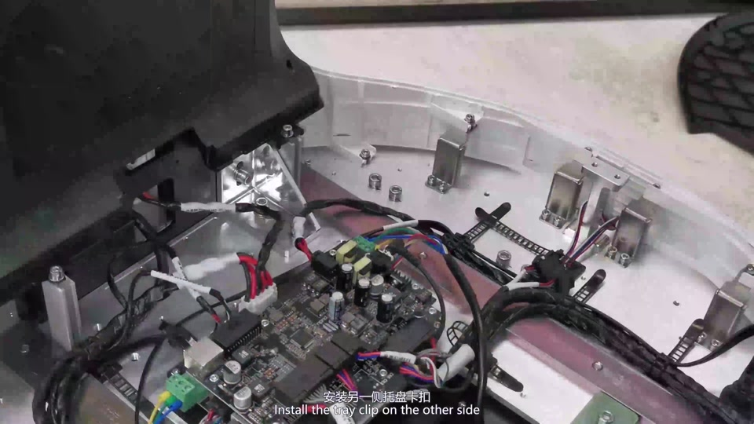
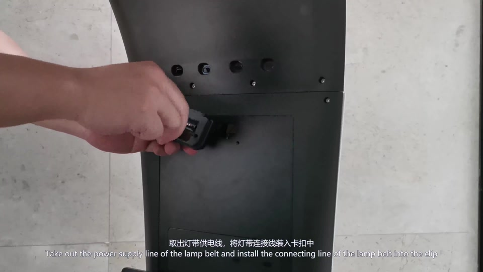
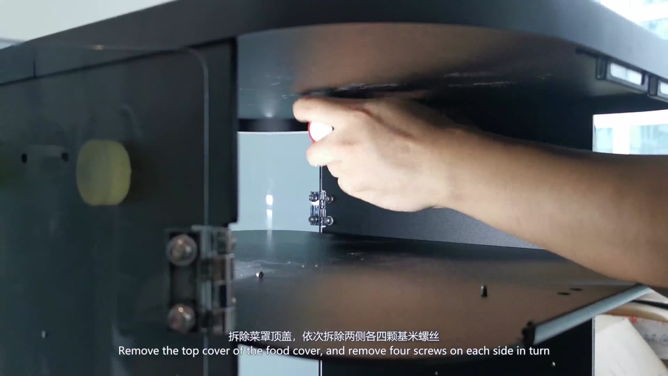

视频所示螺丝刀、六角套筒 / 内六角工具和开口扳手。
Before you start
适用范围与准备
本页面向具备 BellaBot 机械拆装能力的人员。开始前停止机器人任务，准备零件收纳位置，并先完整观看视频。
黑色胶带、扎带以及用于分类保存螺丝和垫片的容器。
抬起整套菜罩和落位时建议两人配合，避免玻璃门板或机身受碰撞。
需要调位置的螺丝先预紧；门板顺畅后再按视频顺序最终锁紧。
PUDU Academy video
完整拆装视频
视频包含从 Bella 托盘改装为菜罩、再恢复托盘，以及菜罩组件拆散的完整过程。网页视频保留原有中英字幕。
Step by step
拆装步骤
下列顺序按视频整理。螺丝、垫片、固定片和线束位置以实机及原视频画面为准，不要混装或遗漏。
A · 拆除原托盘并准备机身
对应视频 00:08–05:23。引脚和托盘固定插座是本阶段的重点。
1
拆上层和中层托盘
按视频拆下托盘前后固定螺丝。托盘仍会很紧：从下方朝上轻敲 / 顶起带定位引脚的一端，松开后再抬走托盘。依次处理其余托盘，并按视频拆灯带线固定螺丝、固定片或卡扣。
禁止水平硬拽托盘；不要让引脚承受侧向力。
2
托盘取下后，拆固定插座
每个托盘取下后，继续拆下托盘固定插座 / 托扣 / 固定座。按视频保存固定铁片、螺丝和垫片，并用黑色胶带封住拆除后留下的开口。保护好托盘端部的定位引脚。

3
拆底层托盘并更换机身固定件
从底层托盘下方拆固定螺丝，再拆底层托盘和固定块。取下底盘上壳，拆两侧托盘固定插座，并按视频处理灯带电源线。装回上壳后，将原托盘固定件换成菜罩固定件并锁紧。

B · 组装并安装菜罩
对应视频 05:23–13:18。先完成菜罩框架，再整体落位并调门板。
4
组装侧板、底板和层板
在平整、柔软的台面上，按视频使用锁紧螺母和平垫安装侧板铰链。确认底板方向后装到底板与侧板上，再装另一侧板；依次装好中间层板并逐步紧固。

5
安装透明门板
确认门板上下和左右方向。先固定磁吸件，再把透明门板装到铰链上；用平垫与锁紧螺母固定。依次完成所有门板，避免玻璃边缘互相碰撞。

6
菜罩整体落位，先预紧
两人抬起整套菜罩，平稳放到 BellaBot 机身上。按视频从两侧插入共 12 颗连接螺丝，但先不要完全锁紧；保留位置调整余量。再连接底部固定件。

7
安装顶板磁吸件并调门
按视频把长条磁吸件装到 U 形件，并注意三颗螺丝的位置；再把 U 形件安装到顶板。调整顶板和底部固定件，反复开关所有门板，确认无卡滞后固定顶板，最后锁紧菜罩与机身的 12 颗连接螺丝。

C · 从菜罩恢复原托盘
对应视频 13:18–20:01。按相反顺序拆菜罩，并恢复托盘固定插座和灯带连接。
8
取下整套菜罩并恢复固定插座
先拆底部菜罩固定件与机身的连接，再拆两侧共 12 颗螺丝；两人抬走菜罩。拆掉菜罩固定件和底盘上壳，按视频恢复两侧托盘固定插座 / 托扣及其固定片，确认插座无松动。

9
恢复底层及其余托盘
装回底盘上壳、底层托盘和底部固定件，并按视频锁紧。取出灯带电源线，恢复连接、固定片和卡扣；随后逐层安装其余托盘。每个托盘都先对准定位引脚，再平稳落位并锁紧固定螺丝。
复装时如托盘不能自然落平，停止压入并重新检查引脚与孔位。
D · 拆散菜罩组件
对应视频 20:01–23:51。用于运输、返修或分件收纳。
10
按视频顺序拆顶板、门板和框架
拆下顶板两侧螺丝并取走顶板；拆门板锁紧螺母并安全放置透明门板；再拆层板固定螺丝、底板和侧板铰链。最后拆下 U 形件和顶部门板磁吸件。所有螺丝、平垫和锁紧螺母按位置分类保存。

Final check
完成后的检查
无论安装菜罩还是恢复托盘，都应在重新投入使用前完成以下检查。
- 托盘定位引脚笔直、无磕碰，托盘已平稳落位
- 托盘固定插座 / 菜罩固定件均已按当前配置安装并锁紧
- 灯带电源线和其他线束连接正确、无夹压或拉扯
- 所有菜罩门板开合顺畅、磁吸正常、相邻门板不干涉
- 螺丝、平垫和锁紧螺母无遗漏，机身外壳已复位
停止安装，不要用螺丝强行拉紧；保护现场并联系技术支持。
不要凭感觉混装。对照视频和拆前位置照片，确认后再继续。
先松开预紧螺丝重新调整顶板和底部固定件，再最终锁紧。